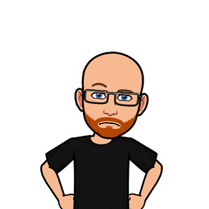

Mon profil
CATTY David
J'ai appris à développer en HTML/CSS au collège en rejoignant un club informatique, j'ai très vite eu l'envie d'aller plus loin donc je me suis renseigné sur le PHP et par la suite j'ai aussi appris le JS.
Très rapidement je me suis spécialisé dans le JS avec Node.js et je me suis lancé en indépendant en 2017.